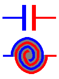
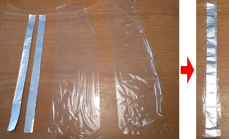
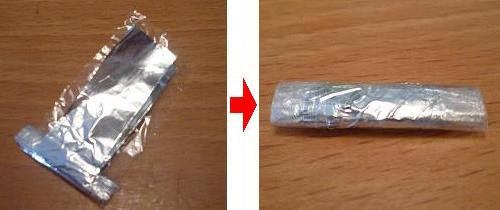
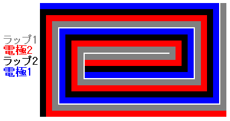
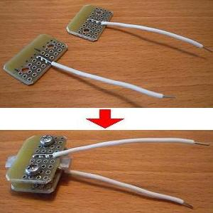
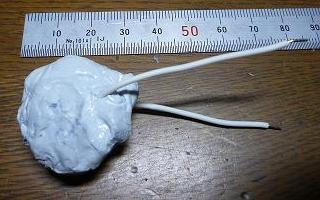

コンデンサーの自作
2010年08月12日 カテゴリー：実験等
平行に金属板（極板）を並べ、電圧をかけると電荷（電気）が溜まります。これをコンデンサー（英語でキャパシター）といいます。回路図の記号では下図上側のように描きます。実際のコンデンサーはたいてい下図下側のように極板を丸めてあり、極板の間にフィルム等（誘電体）が挟まっています。これをマネしてコンデンサーを製作してみようという計画です。

今回は極板にアルミホイル、誘電体にサランラップを使います。ギターのトーン用に使えるよう目標とする容量は0.022μFです。
まず1.5cm×30cmのアルミホイルを2枚、それより広いサランラップを2枚用意します（下写真左側）。
そしてそれを交互に重ねて余った部分を切り取ります（下写真右側）。

下の部分（巻き始め）はセロハンテープで固定するため、ラップ→アルミ→ラップ→アルミの順で重ねるとやりやすいです。できるだけ隙間に空気が入らない方がよいです。
これを裏返して（外側にアルミが露出するようにして）グルグル巻いていきます（下写真左側）。
円柱状にするというよりは平べったい感じでOKです。2枚のアルミホイル同士が触れてしまうとコンデンサーの役割を果たさないので気をつけます。下写真右側が完成したものです。

巻き終わりは上下に極板（アルミ）が露出するようにします（下図参照）。端はセロハンテープで固定しています。

リード線取付と容量調整のため下写真上側のようなものを準備しました。両面スルーホール基板に単線を半田付けしたものです。まぁ電気を通さない硬いものなら何でもよいと思います。これを使って先ほど巻いた本体を挟み込みます（下写真下側）。

ネジを締めれば容量が上がります。今回はキツめに締めて0.024μFぐらいになりました。
締めすぎるとショートしてしまう可能性がありますので注意が必要です。
パテで全体を固めて完成です（下写真）。結構大きいです。

容量は湿度や経年変化で若干変わるかもしれません。もちろんアルミの面積を大きくすればもっと容量は上がります。一応DC9Vには耐えられるみたいなのでエフェクターにも使えるかもしれません。
ギターにとりつけてみたところ普通にトーンが効いています！
ギターに取り付けるコンデンサーにはいろいろと怪しげな評価が飛び交っていますが、自分で作ったコンデンサーがやはり一番！（な気がします）
---2012年4月29日追記---
サランラップ等が経年変化で容量が変わってしまうんじゃないかと思っていましたが、測定してみたところ0.024μFのままでした。意外と長い期間使えそうです。
---2016年11月2日追記---
容量が0.022μFに下がっていました。さすがに経年変化があるようです。
---2020年9月14日追記---
容量は0.022μFのままでしたので、経年変化は大丈夫なようです。
※測定に使ったデジタルマルチメータは別のものに変わっています。